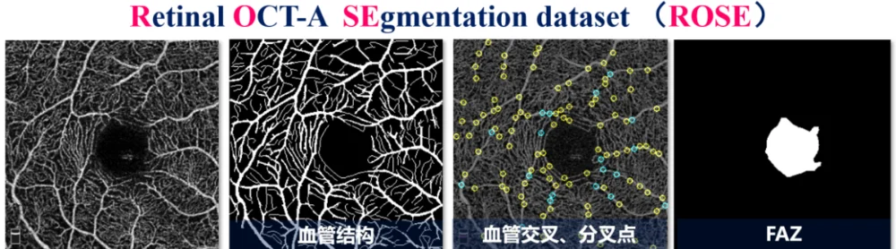
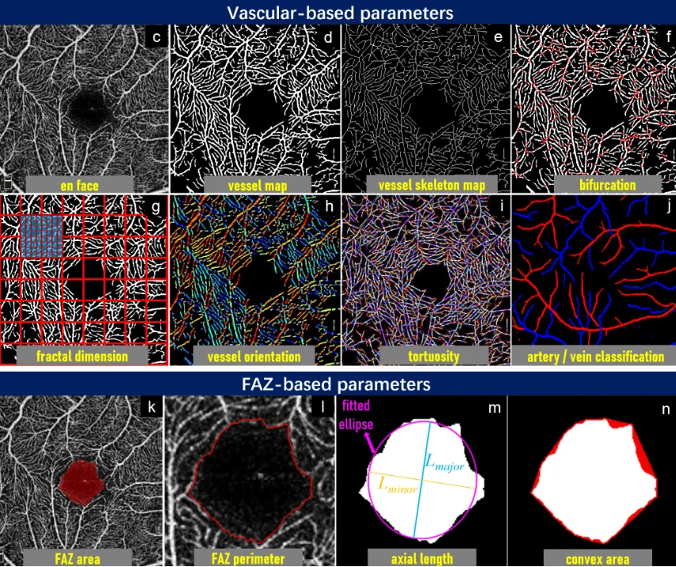
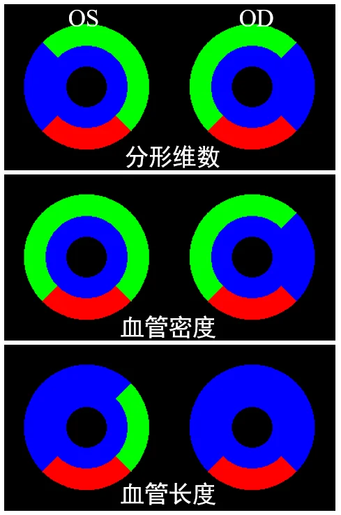
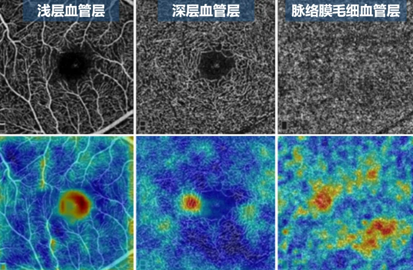

通过眼睛，探索脑部疾病筛查新范式
眼睛是重要的身体部位，是人体除了大脑之外最复杂的器官，人们可透过眼睛观察与理解事物与疾病。例如，自古就有 “体内有疾，眼先知”的说法，如今在许多医学研究中也得到证实。最新研究发现，眼睛可用于观察多个身体器官健康状况，并潜在反映出不同疾病的早期征兆。这些发现或许是脑神经退行性疾病，例如阿尔兹海默症，帕金森病等患者的福音，因为早期筛查对于了解和治疗阿尔茨海默症和帕金森症等疾病非常重要。神经退行性疾病的发病过程较长，日常很难被注意到，且这种病往往是不可逆转的，对人体健康存在隐患。目前，诊断这些疾病需要如MRI、PET等检测费用高昂的医疗设备。另外，如认知功能量表、基因检测、脊髓穿刺取脑脊液等方式，但是由于指征模糊、有创、放射性，不易被大众接受。综上，目前的检测方法普遍不适用于基层人群的大规模筛查。因此，探索一种兼顾安全性、易操作性、经济性和准确性的神经退行性疾病早期预测或诊断方法具有较强的研究价值和临床意义。基于此，长期从事眼科图像分析的中科院宁波材料所智能医学影像(iMED)团队，近年来布局了“眼脑联动”、“眼心联动”等多个跨器官联合研究课题，以寻找对不同年龄段人群都适用的解决方案，通过眼科图像采集和图像的智能化分析，提供阿尔茨海默病、中风、冠心病等心脑疾病的早期检测方案。通过这个方法，可潜在挖掘眼睛结构变化与心脑疾病发病之间的关系，有助于更好、更便捷地理解疾病发病机制。
为了探索眼底视网膜结构变化与阿尔茨海默病间的关系，iMED 团队将光学相干断层扫描血流成像（OCTA） 的眼底图像作为主要分析对象，自动分析和量化阿尔茨海默病患者的视网膜结构参数变化。该团队前期的工作重点是自动分析眼底不同深度的血管结构，通过对临床患者的统计学分析，探索眼底结构特征指标与阿尔茨海默病的相关性。接下来，我们将对iMED团队的相关工作进行简要介绍。
光学断层扫描（OCT） 是一种先进的非侵入性成像技术，可呈现出眼底不同深度的（含视网膜和脉络膜）结构。它还可以高精度地扫描眼底结构中的血流变化，生成OCTA图像，这对于阿尔茨海默病引起的眼底血管变化的相关研究具有重要意义。由于毛细血管的拍摄呈现度低、血管网络结构复杂度高等特点，OCTA血管的自动提取和定量分析面临着巨大的挑战。针对这一问题，iMED团队在视网膜图像分析领域构建了首个OCTA血管分割数据集 (ROSE)，如图1所示。并在此数据集的基础上提出端到端的双阶段血管分割网络（OCTA-Net），实现了OCTA毛细血管的精准分割（IEEE Transactions on Medical Imaging, 2021, 40, 3042802）。在此基础上，针对黄斑中央凹（FAZ）以及血管分叉点/交叉点分析的需求，团队在ROSE中扩展了FAZ以及血管交叉点的标注，并提出了一种基于投票机制的特征自适应多任务学习框架（IEEE Transactions on Medical Imaging, 2022, 41, 3202183），同时实现眼底血管，FAZ以及血管交叉点的分割和定位，降低时空计算复杂度的同时丰富了对视网膜结构变化的描述，为进一步分析眼-脑相关性提供了便利。目前该ROSE系列数据集已向大众公开。

图1 ROSE数据集
在血管相关结构提取的基础上，iMed团队实现了对眼底结构变化的自动分析量化，其中包括血管复杂度、密度、弯曲度、分形维数、动静脉管径比、FAZ面积、FAZ轮廓曲度等12种特征，如图2所示。其中，针对血管弯曲度主观描述带来的误差，提出了一种基于特征融合的弯曲度估计算法，有序融合多个指标弯曲度度量值，提高了弯曲度度量的鲁棒性（IEEE Transactions on Medical Imaging, 2022, 41, 3156906）。同时，针对OCTA血管动静脉分类，实现了OCTA血管动静脉自动分类算法（British Journal of Ophthalmology, 2023, 321399）。为大规模眼底结构的自动量化分析奠定了坚实的技术基础。

图2 眼底结构量化示意图
目前，团队通过与宁波大学附属人民医院、北京大学第三医院、浙江省人民医院、四川大学华西医院等多家医疗机构合作，收集了大批量的阿尔兹海默病人的眼脑临床数据。通过自主开发的智能分析算法对眼底结构进行自动量化，并将所计算的生物指标与临床数据进行了横断面统计分析。根据统计分析，多种量化指标与阿尔兹海默病的发病具有显著相关性（Translational Vision Science & Technology October, 2022, 11, 3623996），如图3所示。其中包括血管密度，血管分形维数，血管弯曲度以及FAZ圆度等。这一结果临床先验共识相符，为后续的眼-脑联动模型奠定了实验基础。与此同时，团队还开展了其他脑部相关疾病的统计分析，包括脑卒中（Frontiers in neuroscience, 2021, 15, 741651）和帕金森症（MICCAI, 2022, 16, 13432）等，结果均发现一些眼部生物指标与发病的统计相关性，为未来实现多种脑部疾病的筛查提供了思路。

图3 眼底结构量化与阿尔兹海默病相关性分析
上述结论让我们相信，通过OCTA来进行阿尔茨海默病的快速检测是具有一定可行性的。因此，iMED团队针对OCTA图像本身的特点，即它包含丰富的血管分层信息，设计了一个端到端的模型来进行AD的检测，让计算机仅通过OCTA图像的识别，判断该受试者是否患有AD。我们通过图表示学习等多种手段，对OCTA不同深度的enface图进行建模，挖掘更多的深度相关的信息。目前，实验表明提出的AI模型可以实现87%的诊断准确率。另外，通过可视化分析发现，团队提出的AI诊断模型更多地关注在FAZ周围的微血管区域，脉络膜毛细血管的激活区域分布更广。以上结论与前期临床病理学的发现一致。

图4 AI诊断模型的可视化热力图
同时，团队正在开展大规模人群的跟踪调研，依托浙江省人民医院以及宁波大学附属人民医院开展社区筛查，旨在通过5-10年的回访调研，收集具有临床研究意义的序列数据，进一步分析眼底结构变化与相关脑疾病发病进程的相关关系。目前，团队所开发的基于人工智能的筛查模型，对阿尔茨海默病的社区筛查准确率已经超过75%。
此研究初步探索了眼底组织结构和阿尔茨海默病的相关性，为未来大规模人群的脑疾病筛查提供新的模式。团队目前也在开展包括冠心病（Nature Machine Intelligence, 2022, s42256-021-00427-7）等心脑血管疾病的眼部图像筛查模式建立。
以上工作，中科院宁波材料所联合了南方科技大学、利物浦大学、利兹大学、华西医院、北医三院、浙江省人民医院、浙江大学附属第二医院、宁波大学附属人民医院、宁波眼科医院等多家单位。相关工作获国家自然科学基金面上项目、浙江省自然基金杰出青年项目、中科院青促会等项目的资助。
相关研究成果
- Y Ma et al., ROSE: A Retinal OCT-Angiography Vessel Segmentation Dataset and New Model, in IEEE Transactions on Medical Imaging, 40(3), pp. 928-939, 2021.
- J Hao et al. Retinal Structure Detection in OCTA Image via Voting-based Multi-task Learning, IEEE Transactions on Medical Imaging, 41(12), pp. 3969-3980, 2022.
- L Mou et al., DeepGrading: Deep Learning Grading of Corneal Nerve Tortuosity, IEEE Transactions on Medical Imaging, 41(8): 2079-2091, 2022
- J Xie et al. Deep Segmentation of OCTA for Evaluation and Association of Changes of Retinal Microvasculature with Alzheimer’s Disease and Mild Cognitive Impairment, British Journal of Ophthalmology, 321399, 2023
- H Duan, et al. Characterization of the Retinal Microvasculature and FAZ Changes in Ischemic Stroke and Its Different Types. Translational vision science & technology, 11(10): 21-21, 2022.
- Y Zhao, et al. Outer Retinal Layer Thickness Changes in White Matter Hyperintensity and Parkinson's Disease. Frontiers in neuroscience, 15:741651, 2021.
- X Wang, et al., Screening of Dementia on OCTA Images via Multi-projection Consistency and Complementarity, MICCAI, pp 688–698, 2022
- A Diaz-Pinto, et al., Myocardial Infarction through your Retinal Scans and Minimal Personal Information, Nature Machine Intelligence, pp 55–61, 2022